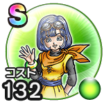

セラフィ
歪められた真実とラーのかがみとっておきのいやしこころ最大コスト+4スキルHP回復効果+7%バギ属性耐性+7%ヒャド属性耐性+7%ターン開始時HPを10回復する / 8.5点
くわしい特徴
【ランク特殊効果】 とっておきのいやしこころ最大コスト+4スキルHP回復効果+7%バギ属性耐性+7%ヒャド属性耐性+7%ターン開始時HPを10回復する

歪められた真実とラーのかがみとっておきのいやしこころ最大コスト+4スキルHP回復効果+7%バギ属性耐性+7%ヒャド属性耐性+7%ターン開始時HPを10回復する / 8.5点
【ランク特殊効果】 とっておきのいやしこころ最大コスト+4スキルHP回復効果+7%バギ属性耐性+7%ヒャド属性耐性+7%ターン開始時HPを10回復する